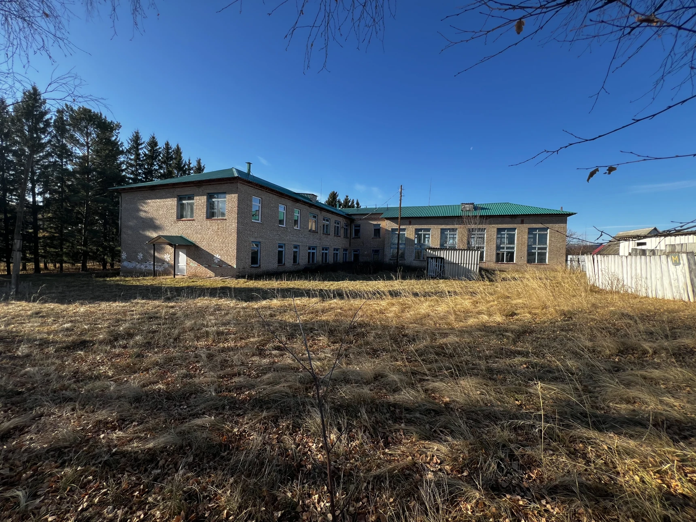

Сельские территории
От места к проекту
Бывшая школа в Верхних Термах становится отправной точкой. Через её историю раскрываются интересы жителей, работа фермеров и замысел центра.
Открыть главную ↗
Бывшая школа в Верхних Термах становится отправной точкой. Через её историю раскрываются интересы жителей, работа фермеров и замысел центра.
Открыть главную ↗
Как жители выбирают, что сохранить и что изменить? В центре рассказа уроки Урбаншколы, игра и разговор о будущем знакомого места.
Посмотреть Урбаншколу ↗
Сайт начинается с хозяйства. Через продукт, покупателя и замысел молодого предпринимателя раскрывается экономическая ценность сельской территории.
Посмотреть программу ↗